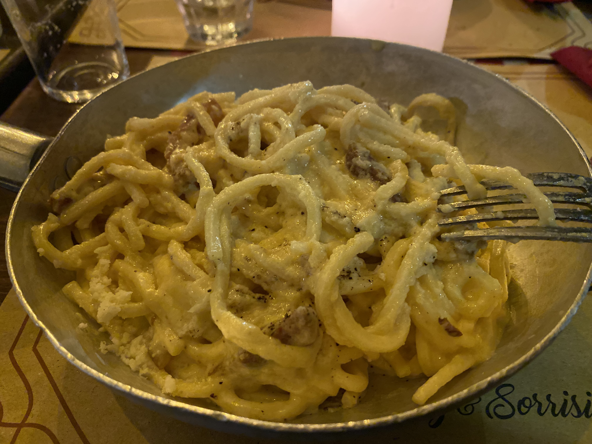

Carbonara

Carbonara From 'Tira E Mola' In Rome
There are many versions of carbonara out there where additional ingredients
are added, but the original version that you would find in Rome only contains
contains 5 ingredients!
Ingredients
- Pasta
- Eggs
- Pecorino romano
- Black pepper
- Guanciale
Steps
- Bring a pot of water to boil. When its boiling, add salt. Throw the
pasta in and cook until its just before al dente – this is important
because the pasta will finish cooking in the sauce.
-
When the water is about to boil, add the guanciale to a cold pan (photo 1) Turn
the heat up to medium and let the guanciale cook until it’s crispy and the fat
has rendered, about 10-15 minutes.
-
Remove the guanciale from the pan, and leave the fat in (photo 2) If pasta isn’t
ready by this time, remove the pan from the heat until pasta is done cooking.
-
While guanciale is cooking, make the carbonara cream – in a small bowl, beat
together egg yolks, pecorino romano, 2 spoons of guanciale fat, a little bit of
pasta water and ground black pepper
-
Add the pasta to the pan, and add about half of a ladle of pasta water to the
pan as well (still over medium heat). Be careful when adding the pasta to the
pan because the guanciale fat will splatter
-
Let the pasta cook in the pan for a few minutes, until it’s al dente. Add more
pasta water if needed. You want there to be a bit of starchy liquid left at the
bottom of the pan, and not have it be completely dry
-
Remove the pan from the heat. Add the carbonara egg cream and mix.
-
Add the guanciale and mix again
-
Plate and top with additional ground black pepper and pecorino romano. Enjoy!